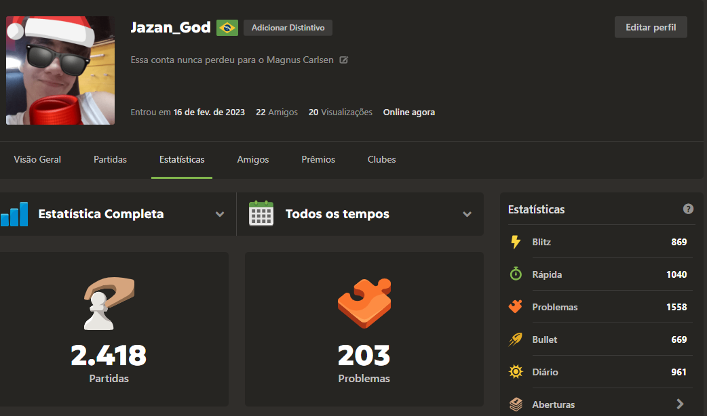

> Sou estudante de Ciência da Computação na UNIFAL.
> Tenho interesse em Inteligência Artificial, Python e C/C++.
> Gosto de jogos de estratégia, xadrez e futebol.
Olá, me chamo João Antônio. Recentemente, saí da minha cidade no interior de São Paulo para vir estudar em Alfenas - MG. Atualmente, estou cursando Bacharelado em Ciências da Computação na UNIFAL (Universidade Federal de Alfenas).
Decidi cursar Ciências da Computação por alguns motivos:
Sempre fui bom em Matemática, mas nunca achei que deveria seguir exclusivamente nela. Foi então, que — pelos motivos 1 e 2 — decidi cursar Ciências da Computação.
Devo confessar que o curso me surpreendeu muito (positivamente); me encontrei muito mais do que eu esperava. E a Matemática? Bem, ela não me abandonou. Um dos meus professores fez uma analogia muito interessante:
"A Matemática para a Computação é como a água no corpo humano. Você não a vê, mas a grande maioria do todo é composta por ela."
Elementos como lógica, rigor, cálculos e pensamento abstrato estão bem mais presentes do que eu imaginava.
Estou apenas no primeiro período ainda, ansioso para o que há por vir.
Além da Computação, como já expus, sempre fui muito fã de raciocínio lógico — então naturalmente desenvolvi gosto por jogos de estratégia. Meus celulares sempre tiveram os clássicos da Supercell, como Clash of Clans e Clash Royale, jogos que me acompanham há muitos anos.
Nunca fui muito ligado em ter um PC gamer ou console em casa. Por isso, acabei ficando de fora de jogos mais famosos de ação e aventura, como God of War, Elden Ring, The Last of Us ou Red Dead Redemption. Apesar de reconhecer a qualidade desses jogos, minha preferência sempre foi por estratégias, planejamento e decisões táticas.
Um jogo milenar que sempre me atraiu é o xadrez. Ainda sou considerado um iniciante, mas gosto muito dos desafios mentais, do pensamento abstrato e dos cálculos envolvidos a cada jogada. Tenho um perfil ativo no chess.com, onde costumo jogar partidas rápidas e treinar táticas.
Fique à vontade para entrar em contato pelo meu e-mail acadêmico: